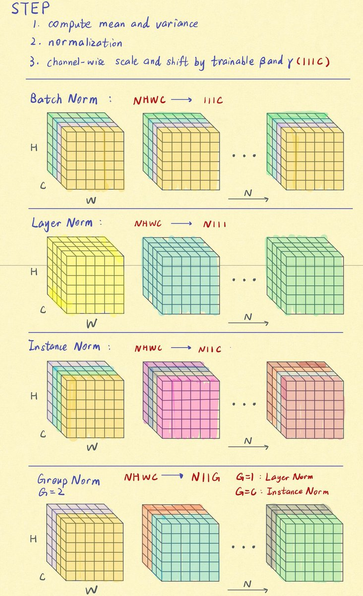
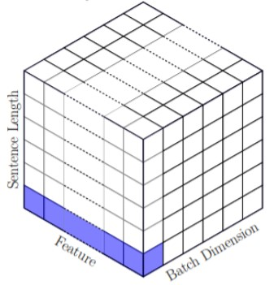
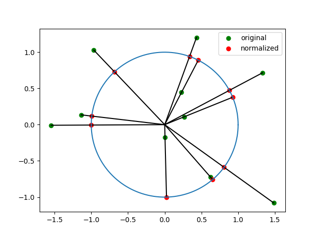
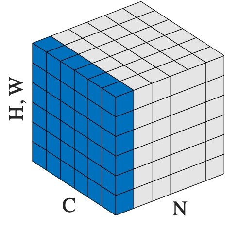
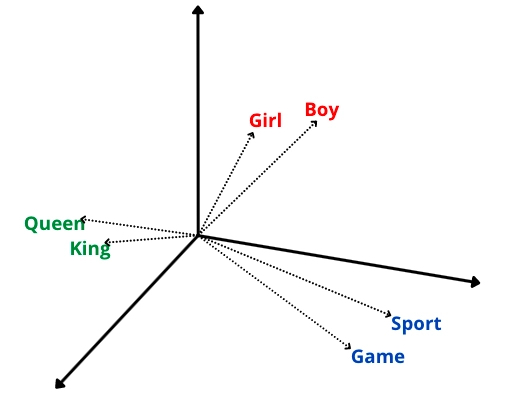

如果是对二维有形式下的各种归一化方式有混淆的，可以参看下面对于 CV 任务的全局概览

2d Norm 概览其中每个方块代表一张图，这张图是由 Channel 数个 2d 的 feature map 组成的。 上方则是注明了每种归一化后 tensor 的维度变化情况。
Batch Norm
Batch Norm
Layer Norm
一维形式
对于 NLP 任务的 一维 embedding，每一个 token 就是不同的 feature。

Layer Norm对同一个 token 位置的所有 feature 进行归一化操作。相当于是把原本长短不一的向量都拉长或缩短到了一个 n 维空间中的球上，n 就是 feature 的维度。不同的 embedding 就是指向角度不同的向量。比如下面这个是二维空间中的形式

2d Normalization二维形式
对于 CV 任务的 二维 embedding，因为单看某个位置的像素其实并没有具体的意义，还需要整张图进行理解，所以往往会将整张图看成一个 $H \times W$ 的feature。不同的 channel 才是不同的 feature。

Layer Norm上面的图相当于一维 Layer Norm 的图绕着垂直于 $feature \times length$ 面的轴旋转90°的结果，channel 数就相当于一维中的 sequence_length。所以二维的 Layer Norm 是对一整张 feature map 去计算均值（mean）和方差（std），然后进行归一化。所以如果输入的 tensor 的维度为 [Batch, Channel, Height, Width] (N, C, H, W)，则计算为：
$$
y= \frac{x−E[x]}{Var[x]+ϵ}∗γ+β, \qquad all ~ x ~ with ~ same ~ N ~ index
$$
Layer Norm 是在每个样本中，对所有的 channel 和 feature 进行归一化。对于 NLP 任务，就是每个 token (channel) * embedding (feature) 上作归一化。 对于 CV 任务，则是对每一个 channel * feature map 作归一化。
作用
Layer Norm 把特征进行归一化，使得原本各feature之间的差异进一步放大，形成各多样的表示，从而利于模型的学习。
比如说，输入的 feature 是 [0.001, 0.008, 0.003] 。对于下一层来说输入值都在 0 附近，那么每个下一层的输出哪怕每一个 feature 的权重不一样，输出的差别也很小。
但是如果使用 Layer Norm 对 feature 进行归一化。整个向量就变成了 [0.08, 0.067, 0.025] 这样所有分量之间的差异就变大了。
但是这里存在一个问题，这么做的前提条件是 feature 各分量之间仅只有相对大小关系存在意义，而绝对值的大小并没有被模型所捕获。

Semantic Vector也就是说 feature 实际上是在 space 空间中的一个向量。仅有向量的指向具有明确意义，向量的模长是无意义的。这样的归一化方式在 NLP 的 embedding 空间中是合理的，实验效果也不错，但是在每个 feature 绝对值大小有特殊含义的表征上就不是很合理。比如一张纯黑和纯白的图，过 Layer Norm 后都是一致的，但是却显示不了差别，就丧失了部分信息。
按理说，强化学习 (Reinforcement Learning, RL) 的输入 feature 使用 Batch Norm 针对每个 feature 单独归一化似乎更合理。因为输入的 state 往往是具有一定的物理含义。所以其绝对值的范围相差比较大，Layer Norm 容易出现小绝对值的量被大绝对值的量所 “淹没” 的情况。
比如 [血量, x坐标, y坐标] ，由于血量的值可能在 [0, 100] 范围内，而坐标 在 [0, 1] 范围内。之就会导致 Layer Norm 会一直得到一个近似于 [1, 0, 0] 的向量。
但是如果是 Batch Norm，则网络是和当前位置的其它值进行比较，则不会出现 feature 之间的相互淹没。
但是实验却发现，RL 使用 Batch Norm 的效果并不好。一种解释是 Batch Norm 需要一个稳定的分布进行输入，而 RL 由于在策略未学好之前，一直在进行探索。所以其输入的分布是极其不稳定的。因而导致 Batch Norm 学到的统计量也十分不稳定。
Instance Norm
Group Norm
RMS Norm
RMS Norm 全称是 Root Mean Square Layer Normalization。其是为了提高 Layer Norm 的训练速度，仅利用激活值总和的均方根进行缩放。
其计算公式如下：
$$ \begin{align} RMSNorm(x) &= \frac{x}{RMS(x)} \cdot \gamma \\ RMS(x) &= \sqrt{\frac{1}{H} \sum^{H}_{i=1} x_{i}^{2}} \end{align} $$
RMS Norm 是诸如 Chinchilla 等大语言模型的归一化方法。
Deep Norm
DeepNorm 是为了稳定深层 Transformer 的训练，其计算公式如下：
$$ DeepNorm(x) = LayerNorm(\alpha \cdot x + Sublayer(x)) $$
Sublayer 是 Transformer 层中的前馈网络或自注意力模块。DeepNorm 用到了 GLM 等大语言模型上。
归一化模块的位置
同时，Normalization 也把输出的模长归一化，使得梯度不会在